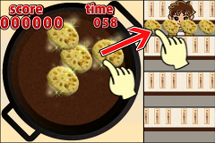

help4 </ title> </ head> <body style =" word-wrap: break-word;-webkit-nbsp- mode: space;-webkit-line-break: after-white-space; ">
<div> <br/> </ div>
<strong> <div> <font size="5"> ●Description of game this title </ font> </ p> </ br>
<div align="center">  </ a> </ div> </ br>
And to bring to his audience without lifting your finger from the screen while you touch the seeds,
You can Feeding the tempura in the audience when you release your finger from the screen. </ Br>
</ Br>
There is a time limit, the game will end when it comes to 0. </ Br>
</ Br>
Please pass the tempura same demand because it has requested the tempura you want to eat can have audience. </ Br>
</ Br>
same tempura is placed in the pot if you pass the tempura different. </ Br>
</ Br>
Points will vary depending on the stage that is raised in the tempura of correct answer. </ Br>
</ Br>
There are three types of stage that up of tempura. </ Br>
</ Br>
Combo will be counted and can be passed at the timing of certain tempura correct answer. </br>
</ Br>s
It becomes the fever state combo is a multiple of 10. </ Br>
</ Br>
Tempura will not burnt during the fever. </ Br>
</ Br>
Winning score will increase if you hold out a fever combo is uninterrupted. </ Br>
</ Br>
<p/>
</ Strong>
</ Body> </ html>